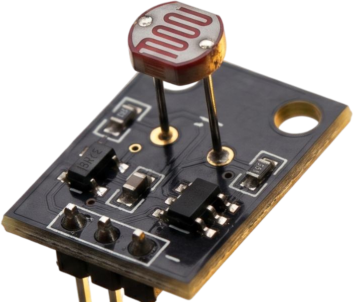

“Criatividade é apenas conectar as coisas.”
— Steve Jobs


Este protótipo representa muito mais do que um simples aprendizado em aula, mas um exemplo real de que a eletrônica junto da computação pode nos render ótimas e inovadoras invenções que solucionaram em muito os problemas de milhares de empresas, comércios e até residências.
Faça a Simulação
O projeto tem como objetivo informar e educar acerca das tantas possibilidades que o componente LDR oferece quando integrado à microcontroladores modernos, demonstrando na prática a convergência entre hardware de sensoriamento e aplicações web.
Tudo funciona de um jeito simples e intuitivo em três etapas conectadas:
Um sensor de luz (chamado LDR) mede continuamente a iluminação do ambiente e envia essa informação analógica diretamente para o Arduino, que funciona como o "cérebro" do circuito.
Ao receber os dados, o Arduino processa a leitura e acende luzes LED de diferentes cores (branca, vermelha, laranja e verde) para indicar visualmente o nível de luz no momento.
Além da sinalização física, o sistema transmite essas informações diretamente para o nosso site, onde os dados ficam visíveis e acessíveis em tempo real.
Hardware utilizado na construção e validação do protótipo:
Para garantir que tudo funcionaria perfeitamente, o processo foi dividido em três etapas:
Primeiro, testamos e validamos todo o circuito na plataforma digital Tinkercad.
Em seguida, montamos a estrutura física com os componentes reais e testamos a resposta do sensor na prática.
Por fim, conectamos o sistema físico ao site para confirmar que as informações estavam sendo exibidas corretamente.
Consulte os esquemáticos completos, código-fonte embarcado e detalhamento teórico do projeto.
Estudantes de Engenharia de Computação responsáveis pelo desenvolvimento:
Curso: Circuitos Elétricos
Curso: Elétrica 2
Curso: Front-end